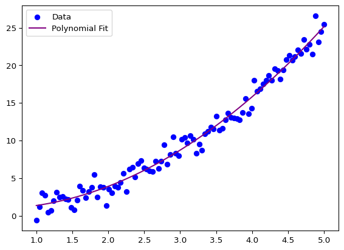

Often we want to find a model which can explain the data. It is important to understand the data and the model to be able to interpret the results and make predictions.
The simplest model is the linear regression model. It assumes that the data has a linear relationship with the target variable. For example, if we have a single feature \(x\) and a target variable \(y\), the linear regression model can be defined as:
\[
y = \beta_0 + \beta_1 x + \epsilon
\]
where \(y\) is the target variable, \(x\) is the feature, \(\beta_0\) and \(\beta_1\) are the coefficients, and \(\epsilon\) is the error term.
For multiple features \(x_1, x_2, \ldots, x_n\), the linear regression model can be defined as:
where \(y\) is the target variable, \(x_1, x_2, \ldots, x_n\) are the features, \(\beta_0, \beta_1, \ldots, \beta_n\) are the coefficients, and \(\epsilon\) is the error term.
In python there exists serveral libraries which can be used to fit a linear regression model.
Using scipy
A easy way is to use scipy library. The scipy library has a function called linregress which can be used to fit a linear regression model. The function returns the slope, intercept, r-value, p-value, and the standard error of the estimate. And with scipy version 1.15.2 also the intercept error.
slope: -0.603156 intercept: 0.258124
R-squared: 0.196135
p-value: 0.455136
standard error: 0.704990
Intercept error: 2.338187
95% confidence interval: -7.183031685687977 to 7.699280317773475
Important
For older version scipyonly returned 5 values with fields slope, intercept, rvalue, pvalue and stderr. For compatiblity reasons the return values are 5 elements tuple.
Another library is statsmodels. The statsmodels library provides more detailed information about the model, such as the coefficients, standard errors, t-values, p-values, and confidence intervals.
Linear regression may not always be sufficient, especially for complex relationships. Non-linear models provide more flexibility.
Polynomial Regression
Polynomial regression is a type of linear regression where the relationship between the independent variable \(x\) and the dependent variable \(y\) is modeled as an \(n\)-th degree polynomial.
import numpy as npimport matplotlib.pyplot as plt# Sample dataX = np.linspace(1, 5, 100)y = X**2+ np.random.normal(0, 1, 100)model = np.polyfit(X, y, 2)print("Coefficients:", model)# Create a polynomial functionmodel = np.poly1d(model)X_range = np.linspace(1, 5, 100)y_fit = model(X_range)print(model)plt.scatter(X, y, color='blue', label='Data')plt.plot(X_range, y_fit, color='purple', label='Polynomial Fit')plt.legend()
Coefficients: [ 1.17620565 -1.01381064 1.17646647]
2
1.176 x - 1.014 x + 1.176

Curve Fitting with scipy
scipy provides the curve_fit function to fit a non-linear model to the data. The function requires the model function and the data as input.
from scipy.optimize import curve_fitdef nonlinear_func(x, a, b, c):return a * np.sin(b * x) + cpopt,pov = curve_fit(nonlinear_func, X.flatten(), y)perr = np.sqrt(np.diag(pov))print("Fitted parameters:", popt)print("Parameter errors:", perr)X_range = np.linspace(1, 5, 100)y_fit = nonlinear_func(X_range, *popt)plt.scatter(X, y, color='blue', label='Data')plt.plot(X_range, y_fit, color='purple', label='Non-Linear Fit')plt.legend()plt.show()
---title: "Inferential Statistics"execute: echo: True eval: Truecode-links: - text: "Open in Colab" href: "https://colab.research.google.com/github/stkroe/PythonForChemists/blob/main/course/notebooks/DataModels.ipynb" icon: "laptop" - text: "Download Code" href: "https://github.com/stkroe/PythonforChemists/blob/main/course/notebooks/DataModels.ipynb" icon: "journal"---Difficulty level: <span style="color:#2B7492">{{< bi star-fill >}} </span># Data Models {.unnumbered}## Linear Regression {.unnumbered}Often we want to find a model which can explain the data.It is important to understand the data and the model to be able to interpret the results and make predictions.The simplest model is the linear regression model. It assumes that the data has a linear relationship with the target variable. For example, if we have a single feature $x$ and a target variable $y$, the linear regression model can be defined as:$$y = \beta_0 + \beta_1 x + \epsilon$$where $y$ is the target variable, $x$ is the feature, $\beta_0$ and $\beta_1$ are the coefficients, and $\epsilon$ is the error term.For multiple features $x_1, x_2, \ldots, x_n$, the linear regression model can be defined as:$$y = \beta_0 + \beta_1 x_1 + \beta_2 x_2 + \ldots + \beta_n x_n + \epsilon$$where $y$ is the target variable, $x_1, x_2, \ldots, x_n$ are the features, $\beta_0, \beta_1, \ldots, \beta_n$ are the coefficients, and $\epsilon$ is the error term.In `python` there exists serveral libraries which can be used to fit a linear regression model.### Using `scipy`{.unnumbered}A easy way is to use `scipy` library. The `scipy` library has a function called `linregress` which can be used to fit a linear regression model. The function returns the slope, intercept, r-value, p-value, and the standard error of the estimate. And with scipy version 1.15.2 also the intercept error.```{python}from scipy.stats import linregressimport numpy as npx = [1, 2, 3, 4, 5]y = x*np.random.normal(0, 1, 5)+np.random.normal(0, 1, 5)results = linregress(x, y)slope = results.slopeintercept = results.interceptr_value = results.rvaluep_value = results.pvaluestd_err = results.stderrintercept_err = results.intercept_stderrprint("slope: %f intercept: %f"% (slope, intercept))print("R-squared: %f"% r_value**2)print("p-value: %f"% p_value)print("standard error: %f"% std_err)print("Intercept error: %f"%intercept_err)# Two-sided inverse Students t-distribution# p - probability, df - degrees of freedomfrom scipy.stats import ttinv =lambda p, df: abs(t.ppf(p/2, df))print("95% confidence interval: "+str(intercept - tinv(0.05, len(x)-2)*intercept_err) +" to "+str(intercept + tinv(0.05, len(x)-2)*intercept_err))```:::{.callout-important}For older version `scipy`only returned 5 values with fields slope, intercept, rvalue, pvalue and stderr. For compatiblity reasons the return values are 5 elements tuple.```{python}from scipy.stats import linregressslope, intercept, r, p, se = linregress(x, y)print("slope: ", slope)print("intercept: ", intercept)print("r-value: ", r)print("p-value: ", p)print("standard error: ", se)```And if you want to get the intercept error you can use the following return value as a object:```{python}from scipy.stats import linregressresults = linregress(x, y)print("slope: ", results.slope)print("intercept: ", results.intercept)print("r-value: ", results.rvalue)print("p-value: ", results.pvalue)print("standard error: ", results.stderr)print("intercept error: ", results.intercept_stderr)```:::### Using `statsmodels`{.unnumbered}Another library is `statsmodels`. The `statsmodels` library provides more detailed information about the model, such as the coefficients, standard errors, t-values, p-values, and confidence intervals.```{python}import statsmodels.api as smimport numpy as npX = np.array([1, 2, 3, 4, 5])y = X*np.random.normal(0, 1, 5)+np.random.normal(0, 1, 5)X_with_const = sm.add_constant(X) # Add intercept termmodel = sm.OLS(y, X_with_const).fit()print(model.summary())```### Using `scikit-learn` {.unnumbered}One of the most popular libraries is `scikit-learn`. The following code shows how to fit a linear regression model using `scikit-learn`:```{python}from sklearn.linear_model import LinearRegressionimport numpy as npimport matplotlib.pyplot as plt# Sample dataX = np.linspace(1, 5, 100).reshape(-1, 1)y =2* X +1+ np.random.normal(0, 1, 100).reshape(-1, 1)# Model fittingmodel = LinearRegression()model.fit(X, y)print("Parameters:", model.get_params())print("R-squared:", model.score(X, y))# Predictionsy_pred = model.predict(X)# Plotplt.scatter(X, y, color='blue', label='Data')plt.plot(X, y_pred, color='red', label='Linear Fit')plt.legend()plt.show()```---## Non-Linear FitsLinear regression may not always be sufficient, especially for complex relationships. Non-linear models provide more flexibility.### Polynomial RegressionPolynomial regression is a type of linear regression where the relationship between the independent variable $x$ and the dependent variable $y$ is modeled as an $n$-th degree polynomial.```{python}import numpy as npimport matplotlib.pyplot as plt# Sample dataX = np.linspace(1, 5, 100)y = X**2+ np.random.normal(0, 1, 100)model = np.polyfit(X, y, 2)print("Coefficients:", model)# Create a polynomial functionmodel = np.poly1d(model)X_range = np.linspace(1, 5, 100)y_fit = model(X_range)print(model)plt.scatter(X, y, color='blue', label='Data')plt.plot(X_range, y_fit, color='purple', label='Polynomial Fit')plt.legend()```### Curve Fitting with `scipy``scipy` provides the `curve_fit` function to fit a non-linear model to the data. The function requires the model function and the data as input.```{python}from scipy.optimize import curve_fitdef nonlinear_func(x, a, b, c):return a * np.sin(b * x) + cpopt,pov = curve_fit(nonlinear_func, X.flatten(), y)perr = np.sqrt(np.diag(pov))print("Fitted parameters:", popt)print("Parameter errors:", perr)X_range = np.linspace(1, 5, 100)y_fit = nonlinear_func(X_range, *popt)plt.scatter(X, y, color='blue', label='Data')plt.plot(X_range, y_fit, color='purple', label='Non-Linear Fit')plt.legend()plt.show()```